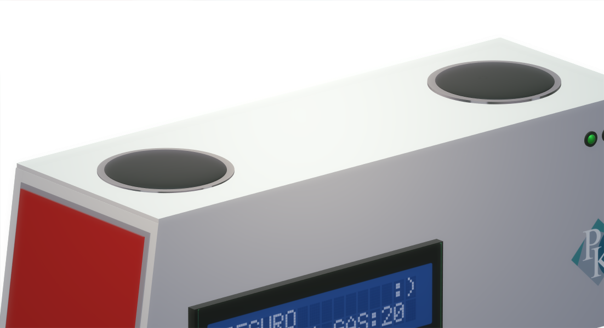
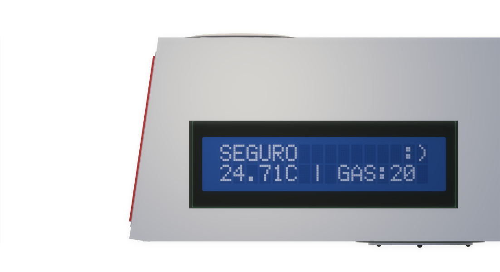
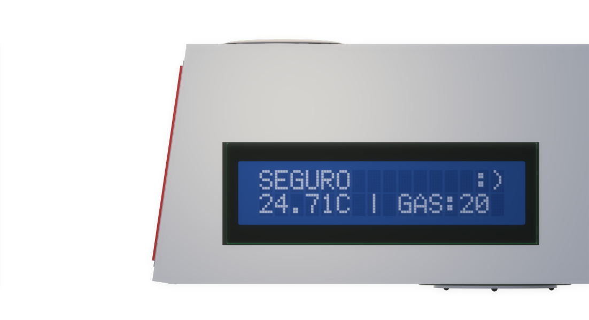

Deaf Fire Alarm - DFA
Mais novo lançamento da PKE na área de segurança imobiliária
Qual o nosso objetivo com o DFA?
- A resposta é simples: acabar com a exclusão de deficientes durante situações de emergência, onde PNE/PCD estão mais vulneráveis a correrem riscos, principalmente a população cega e surda, pois hoje em dia a legislação exige apenas alerta sonoro, deixando os alertas visuais completamente de lado
Design simples e moderno
- Várias funcionalidades em um corpo compacto

Sinal sonoro eficiente
- Dois buzzers localizados na parte de cima emitem um som audível em grandes distâncias em caso de temperatura elevada e/ou gases tóxicos em nível anormal no ambiente
 

Comunicação visual de boa qualidade
- LEDs que mudam de cor de acordo com a temperatura e nível de gás
- Visor LCD que mostra informações detalhadas sobre temperatura e gás no ambiente
Sensores
- Sesores de gás/fumaça e temperatura localizadas na parte inferior do produto realizam a medição constante dos níveis de gás e temperatura

Que tal testar o produto?
- Ao clicar, espere a página carregar completamente e depois clique em "Simular"